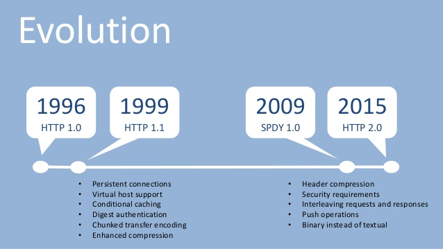

HTTP е мрежов протокол от приложния слой на OSI модела, служещ за обмяна на информация и ресурси в компютърни мрежи. Доказва се като много успешен. С времето обаче се оказва, че начинът, по който по-старите версии на HTTP използват транспортнияслой под себе си, е неефективен и не отговаря на нуждите на модерния свят.
Да се върнем назад в историята, за да бъдем по-конкретни:
Заради това клиентите, използващи HTTP/1.1 и HTTP/1.0, които искат да изпращат много заявки към даден сървър, са принудени да изграждат няколко TCP конекции към сървъра, за да могат да постигатконкурентност, като по този начин се намалява латенцията.
HTTP/2 се справя с тези проблеми, без да променя семантиката на протокола. Просто оптимизира начина, по който
съобщенията се пренасят по транспортния слой/мрежата. Ключовите оптимизации са един вид 'преплитане' на заявки и
отговори (requests and responses) в една TCP конекция (). Също така приоритизирането на заявки - това позволява
по-важните заявки да приключват по-бързо, което в крайна сметка подобрява производителността.
В крайна сметка HTTP/2 щади повече мрежата, защото се използват по-малко TCP конекции в сравнение с HTTP/1.x.
Също така HTTP/2 обработва съобщенията по-ефикасно, използвайки т.нар.
binary framing
layer.
HTTP/2 е оптимизация на HTTP/1.1, позволяваща по-добро използване на мрежовите ресурси. Идеята му е чрез нови способи за пренос на данни по мрежата, да се ускори времето за зареждане на дадена уеб страница. Предимствата на HTTP/2 са по-добро управление на връзката, ниско потребление на трафик и други. Семантично по никакъв начин не се различава от HTTP/1.1 - всички приложения, които използват HTTP/1.1, могат да преминат към HTTP 2, без да трябва да променят семантиката си.
